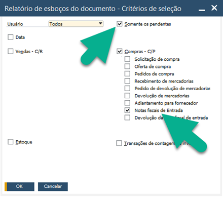
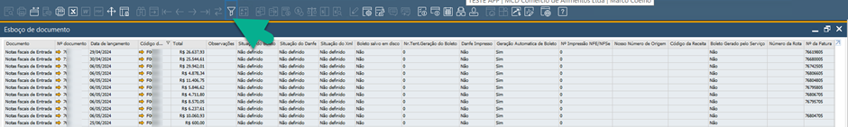
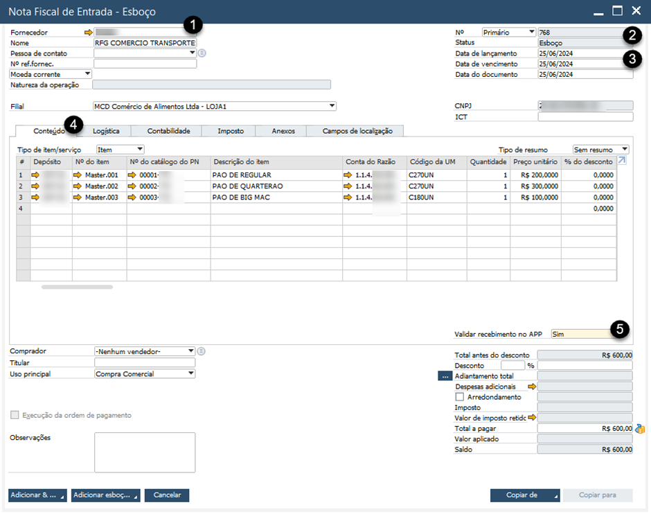
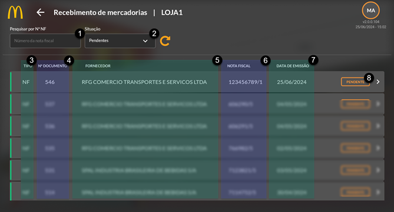
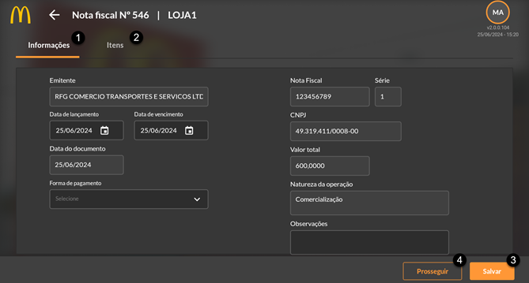
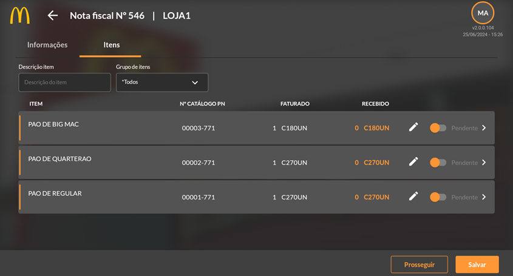
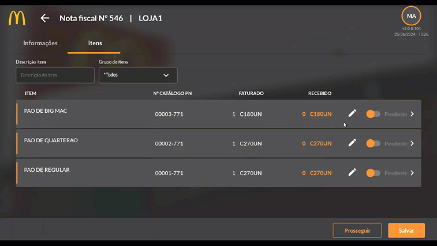
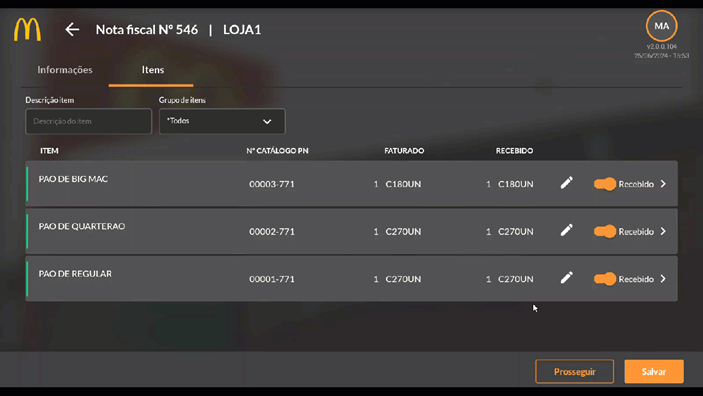
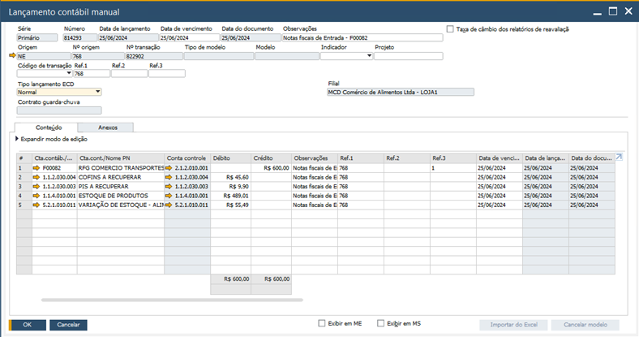

Recebimento de Mercadorias
O Processo de Recebimento de mercadorias consiste na confirmação e pré-configuração recebimento da Nota Fiscal de Entrada pelo escritório sendo disponibilizado para recebimento na loja.
A loja ficará responsável pela conferência dos itens e finalização do processo que irá movimentar o estoque da loja e lançamentos no financeiro (contas a pagar).
Para que os processos ocorram de forma correta, é necessário que as parametrizações de impostos estejam realizadas na base de dados. Se necessário, revisei as determinações e criação de impostos.
Processo no SAP
As Notas Fiscais de Entrada são recebidas através do add-on Invent ou Skill e os documentos ficarão registrados como esboço para posterior recebimento pela loja.
Os esboços poderão ser consultados através do caminho: Módulos > Compras > Relatórios de Compras > Relatório de Esboços de documento.
A tela irá mostrar os lançamentos realizados de acordo com o usuário selecionado. Certifique-se de selecionar o usuário correto ou defina “todos”.
As informações serão apresentadas na tela. Utilize o filtro para delimitar as buscas, trazendo apenas o fornecedor que deseja pesquisar, por exemplo. Os documentos até o momento são apenas esboços, não estão gerando estoque ou quaisquer lançamentos financeiros no SAP. Isso dependerá do lançamento da loja.
Veja que no esboço da Nota Fiscal de Entrada temos o fornecedor (1), status do documento (2) (que será alterado após a efetivação do recebimento), as datas pertinentes ao documento (3), que serão: lançamento (refere-se a data que de fato o documento será inserido no SAP), vencimento (data de vencimento da Nota Fiscal) e data do documento (refere-se a data de emissão do documento fiscal). Além disso temos as informações de conteúdo (4) com as informações dos itens, quantidades, tributação, dentro outros.
Certifique-se de que o documento está como “sim” em “Validar Recebimento no APP” (5). Importante: mesmo que essa opção esteja marcada como sim, para o recebimento de mercadoria pelo aplicativo é necessário que esses outros dois campos também estejam habilitados:
BR One – Configurações por filial
Caminho: Administração > Definição > BR One Franquias > Módulo Caixa e Cofre > Configurações por Filial
Cadastro do parceiro de negócios
Caminho: Módulos > Parceiro de Negócios > Cadastro do Parceiro de Negócios
Após finalizadas as configurações a NF ficará disponível para recebimento no aplicativo. Essas são parametrizações iniciais, não sendo necessária a realização em cada inserção de documento.
Processo no APP
Ao acessar o módulo compras no aplicativo serão apresentadas as notas fiscais recebidas, pendentes e devolução de acordo com o demonstrado em Introdução deste manual. Clique em Recebimento de Mercadoria.
O app mostrará as Notas Fiscais disponíveis. Importante que os lançamentos sejam feitos no dia de recebimento na loja sendo verificado todos os itens listados na NF com o real enviado pelo fornecedor. Certifique-se também se as unidades de medidas estão de acordo com a Nota Fiscal.
O aplicativo mostrará os recebimentos disponíveis. Faça a busca do recebimento que deseja lançar pelo número da nota fiscal (1) e/ou por situação (2).
Será possível visualizar o tipo de documento (3), numeração SAP (4) (não confunda essa numeração com a número da nota fiscal. Essa numeração é interna na base de dados SAP), razão social do fornecedor (5), numeração da Nota Fiscal (6), data de emissão do documento (7) e situação do recebimento (8). Faça a seleção do documento.
Ao abrir o recebimento, note que serão habilitadas duas abas: Informações (1) e Itens (2). Na aba informações temos os dados recebidos do XML e cadastros no SAP. Serão apresentadas as informações da Nota Fiscal emitida pelo cliente. Nesta tela faça a alteração das datas de lançamento e vencimento, se necessário. A data do documento está diretamente relacionada com a emissão da NF pelo fornecedor, por este motivo o campo estará bloqueado para edições.
Botão PROSSEGUIR (4) – Finaliza o processo de recebimento. Botão SALVAR (3) – Salva, para continuar posteriormente se perder os lançamentos efetuados. Não finaliza o processo.
Em itens, faça a conferência dos itens em comparação com a Nota Fiscal de entrada.
Veja que é informado o nome do item, número de catálogo, a quantidade faturada e o real recebido.
Selecione o item, flag caso tenha recebido de fato nas quantidades apresentadas ou clique o “lápis” para inserir a quantidade recebida. Caso a listagem seja extensa e não possa conferir todos os itens, clique no botão salvar para continuar em outro momento. Lembre-se de finalizar o processo antes de fechar o turno.
Finalizando o recebimento, estando todos os itens em conformidade com a Nota Fiscal, clique em prosseguir para finalizar o processo. Com isso, será realizada a movimentação de estoque na loja e os lançamentos financeiros para o Contas a Pagar.
Os lançamentos serão realizados e gerado um lançamento contábil manual no SAP. Veja:
Lembre-se que efetuar recebimentos retroativos afetará o estoque atual considerando os lançamentos de contagens, desperdícios, break e promoções. Veja esses processos no manual de estoque.
Caso econtre divergências no recebimento, comunique o escritório ara as devidas correções.